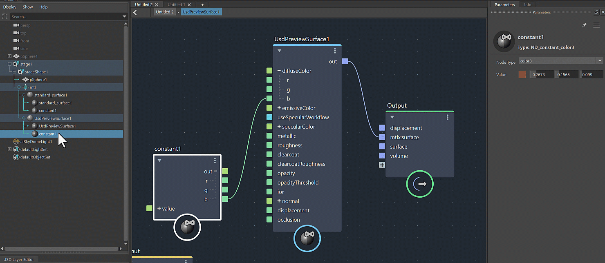

Creating and Manipulating Nodes
Create a Node:
You can create a node in one of the following methods:
Hit
Tabto create a node in LookdevX. You can either type in the name of the node or search through the categories. In the Tab menu, each node displays the name of the library from which it is sourced.
Drag and drop a node from the node library. The node library enables quick browsing and selection from categorized nodes, enhancing your overall efficiency. To show the node libary, select Windows and toggle Node Library.

Rename a Node:
Rename a node by either clicking on the name or pressing the Enter key.

Copy, Paste & Duplicate Nodes and Materials:
You can perform copy, paste, and duplicate operations using the Outliner and LookdevX toolsets. You can duplicate with or without the connections.

Add Backdrops:
Backdrops are organizational nodes that enhance the readability and usability of graphs. To add a backdrop, simply select the nodes, right click, and select Create Backdrop.